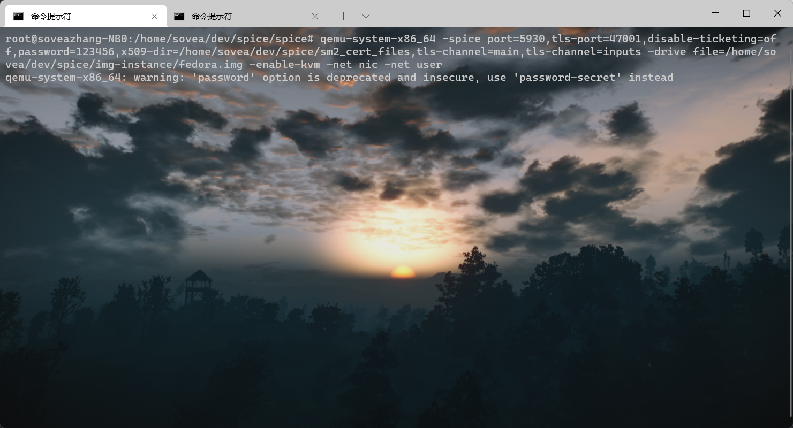
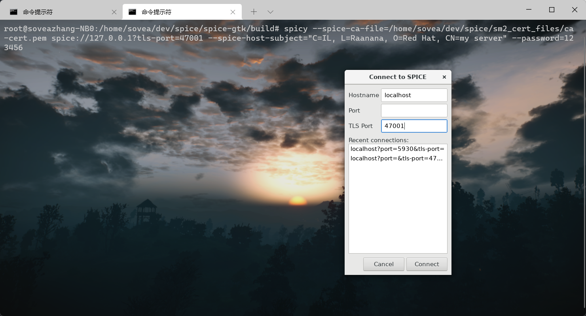
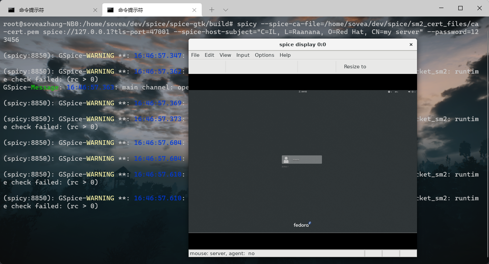

Spicy TLS连接测试
RSA证书
qemu-system-x86_64 -spice port=5930,tls-port=47001,disable-ticketing=on,x509-dir=/home/sovea/dev/spice/rsa_cert_files,tls-channel=main,tls-channel=inputs -drive file=/home/sovea/dev/spice/img-instance/fedora.img -enable-kvm -net nic -net user
spicy --spice-ca-file=/home/sovea/dev/spice/rsa_cert_files/ca-cert.pem spice://127.0.0.1?tls-port=47001 --spice-host-subject="C=IL, L=Raanana, O=Red Hat, CN=my server"
SM2证书
qemu-system-x86_64 -spice port=5930,tls-port=47001,disable-ticketing=off,password=123456,x509-dir=/home/sovea/dev/spice/sm2_cert_files,tls-channel=main,tls-channel=inputs -drive file=/home/sovea/dev/spice/img-instance/fedora.img -enable-kvm -net nic -net user
spicy --spice-ca-file=/home/sovea/dev/spice/sm2_cert_files/ca-cert.pem spice://127.0.0.1?tls-port=47001 --spice-host-subject="C=IL, L=Raanana, O=Red Hat, CN=my server" --password=123456
连接示例



抓取流量
tcpdump -i 网卡 -nn -vv port 47001 -w babassl.pcap
wireshark验证加密套件
RFC 8998: ShangMi (SM) Cipher Suites for TLS 1.3
CipherSuite TLS_SM4_GCM_SM3 = { 0x00, 0xC6 };
CipherSuite TLS_SM4_CCM_SM3 = { 0x00, 0xC7 };